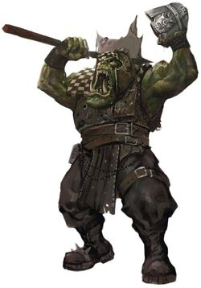

Playable Races > Orc
A mysterious race of strong greenskins who dwell in the deep deserts of southern Karra. They are ordinarily crass, antisocial and aggressive, though some owe this purely to their territorialism and paranoia developed from centuries of constant warfare with the insectoid demons of Khanfusaj. They are the same size as humans, though packed with an inhuman amount of muscle and prominent tusks.
Unbridled Rage: Orcs can rage like a Savage regardless of class, and have advantage on damage rolls when berserk.
Racials: +2 STR -1 INT -1 CHA
Health: 1d9 health points per level.
Origin: Orcs are nomadic, but mostly confined to the southern continent.